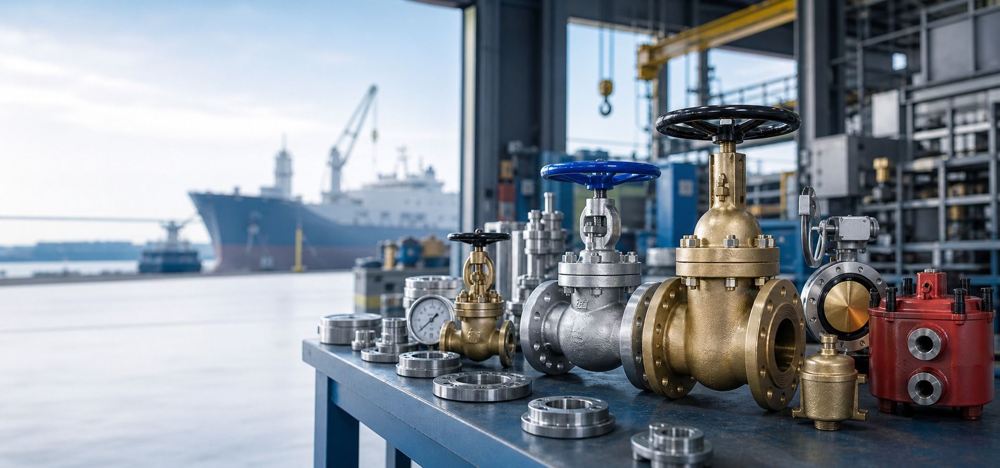

按需制造
围绕船用附件、阀门和通用机械部件，可结合来样、图纸和使用场景进行配套生产。

About
泰州市吉远船用附件有限公司位于江苏泰州，长期面向船舶配套、船舶维修、机舱管路和通用机械制造场景，提供船用阀门、船用附件及相关机械产品。公司以产品适配、规格确认和稳定交付为服务重点，支持客户按产品册、图纸、样品或现场工况进行选型沟通。
产品方向涵盖青铜、铸钢、铸铁、不锈钢等材质阀门，以及蝶阀、阀组、滤器、膨胀节、空气帽、法兰、吸入口、泥箱、消防接头等船用附件。客户可提供使用介质、公称通径、压力等级、连接方式和数量，便于快速确认规格与报价。
Products
没有找到匹配产品，可以换一个关键词或直接电话咨询。
Capability
围绕船用附件、阀门和通用机械部件，可结合来样、图纸和使用场景进行配套生产。
产品册覆盖多类船用阀门及附件，公称通径、压力等级、连接形式可结合实际工况确认。
公司位于江苏泰州，便于周边客户进行产品确认、业务洽谈和长期采购协作。
Contact
如需船用附件、船用阀门或通用机械配件，可直接电话联系确认产品规格、数量与交付需求。